VIII Jornada Humanística, Social y Cultural
Compite, conecta, transforma.
- a
- Centro de Investigaciones Santa Lucía


Una mañana para competir, conectar y transformar
La VIII Jornada Humanística, Social y Cultural reúne deporte, música, juegos de mesa y una pista de inmersión práctica en Seguridad y Salud en el Trabajo. La organiza la Escuela de Ingeniería de Producción de UNIPAZ.
Cada actividad tiene un valor institucional como eje de lo que se vive: respeto, compromiso, honestidad, imparcialidad, pertenencia, transparencia, responsabilidad o justicia. Al cierre, cada equipo reconoce en público tres aspectos positivos de quienes participaron y destaca el valor de su actividad.
Programa del día
Sábado 7 de noviembre, de 7:00 a. m. a 12:00 m. Cada barra marca cuánto dura una actividad y su color indica el valor que se vive en ella.
Las barras van de 7:00 a. m. (izquierda) a 12:00 m. (derecha).
-
Apertura con música en vivo (rock colombiano) y mensaje de apertura
a
Los diez valores
-
Rumbaterapia y acondicionamiento físico
a
Respeto
-
Bobcamp: pista de inmersión práctica en Seguridad y Salud en el Trabajo
a
Los diez valores
-
Talento con propósito
a
Compromiso
-
Microfútbol
a
Honestidad
-
Vóley playa
a
Imparcialidad
-
Crossfit
a
Pertenencia
-
Tenis de mesa
a
Transparencia
-
Tejo
a
Responsabilidad
-
Plan B, solo si llueve: stop y dominó
a
Justicia
-
Plan C, solo si llueve: batalla de barras y ajedrez
a
Respeto
-
Momento de premiación
a
Gratitud
-
Asistencia y encuesta por QR
a
Transparencia
Las barras con contorno discontinuo son el plan de lluvia: si llueve, las actividades al aire libre pasan a zonas cubiertas, con juegos de mesa y batalla de barras.
Diez valores, una rueda
Cada actividad de la jornada tiene como eje uno de los valores de la rueda de UNIPAZ.
- Pertenencia
- Crossfit
- Diligencia
- Presente en la apertura y en el Bobcamp
- Imparcialidad
- Vóley playa
- Honestidad
- Microfútbol
- Tolerancia
- Presente en la apertura y en el Bobcamp
- Respeto
- Rumbaterapia. Plan de lluvia: batalla de barras y ajedrez
- Transparencia
- Tenis de mesa. Asistencia y encuesta por QR
- Justicia
- Plan de lluvia: stop y dominó
- Responsabilidad
- Tejo
- Compromiso
- Talento con propósito
Así se vivieron las jornadas anteriores
28 de marzo de 2026
VII Jornada Humanística, Social y Cultural
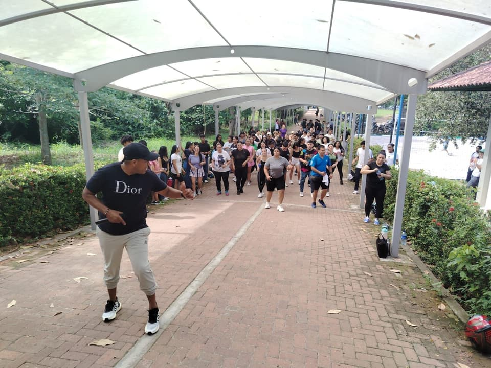
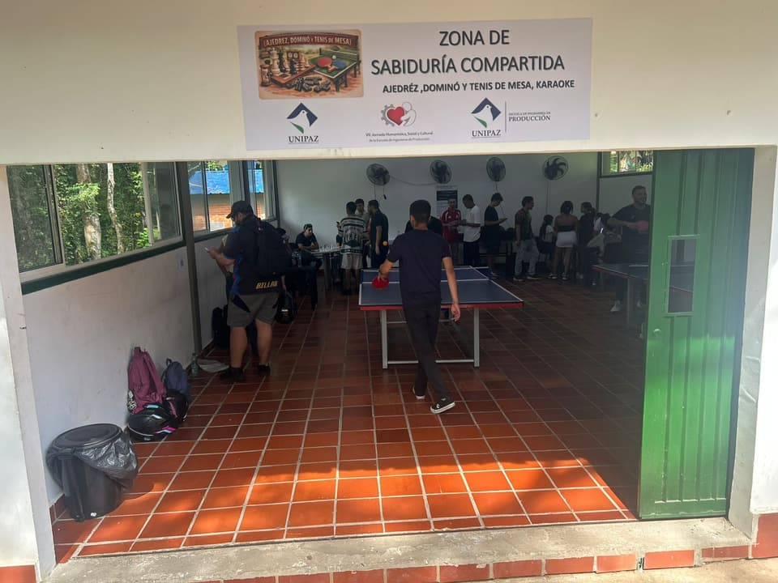
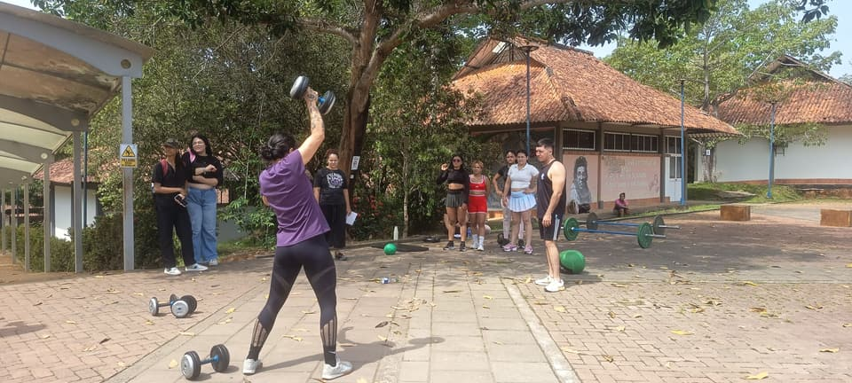
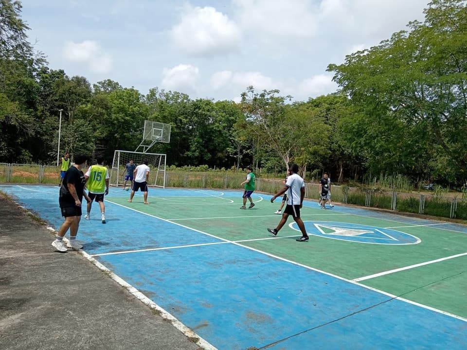
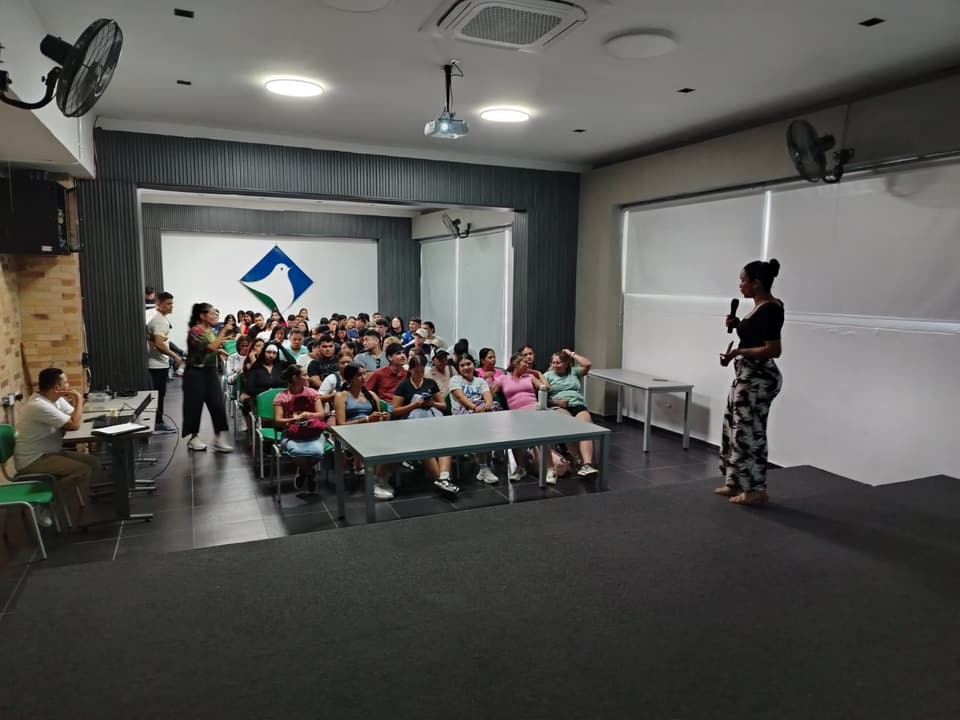
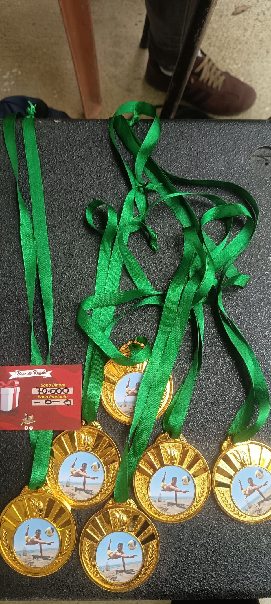
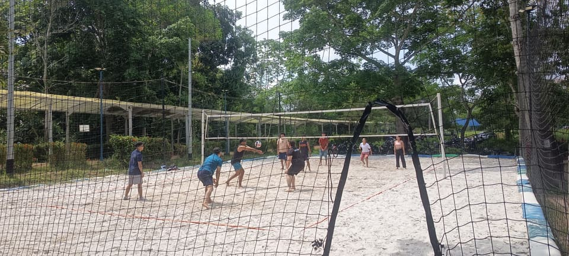
28 de septiembre de 2024
Jornada anterior
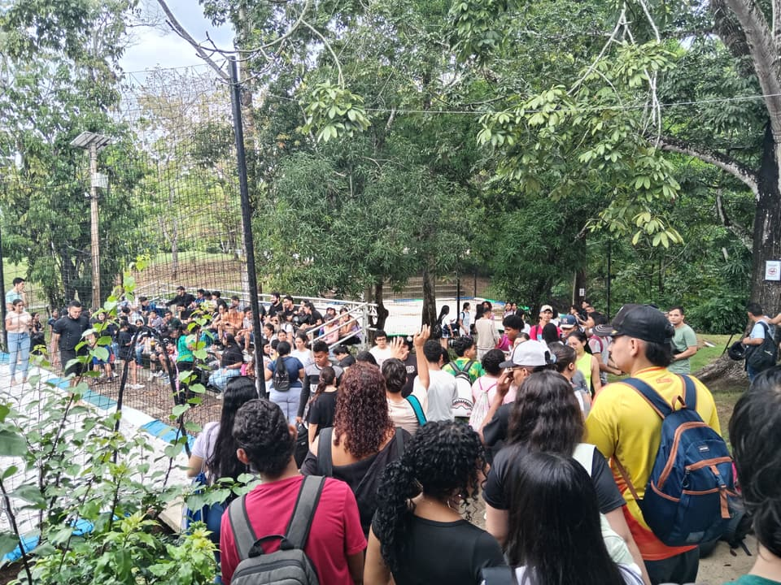
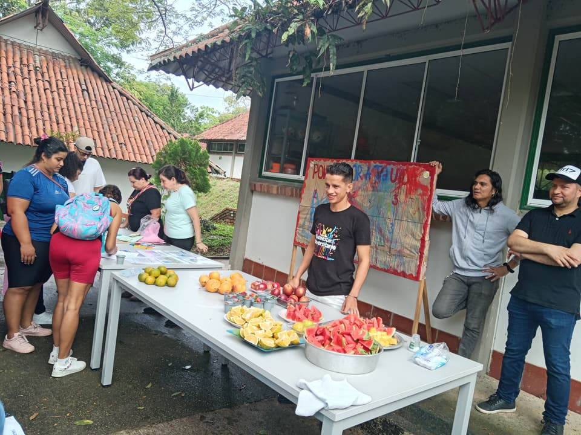
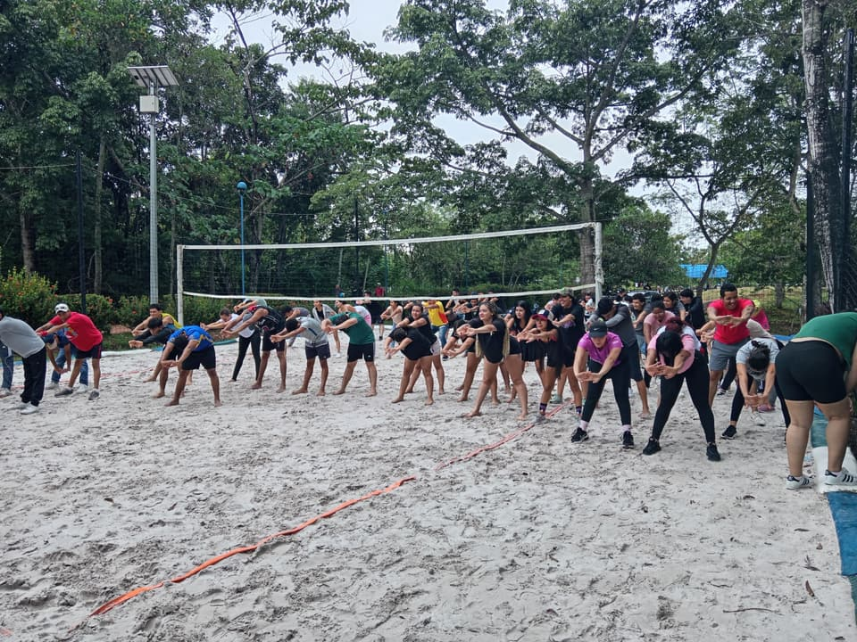
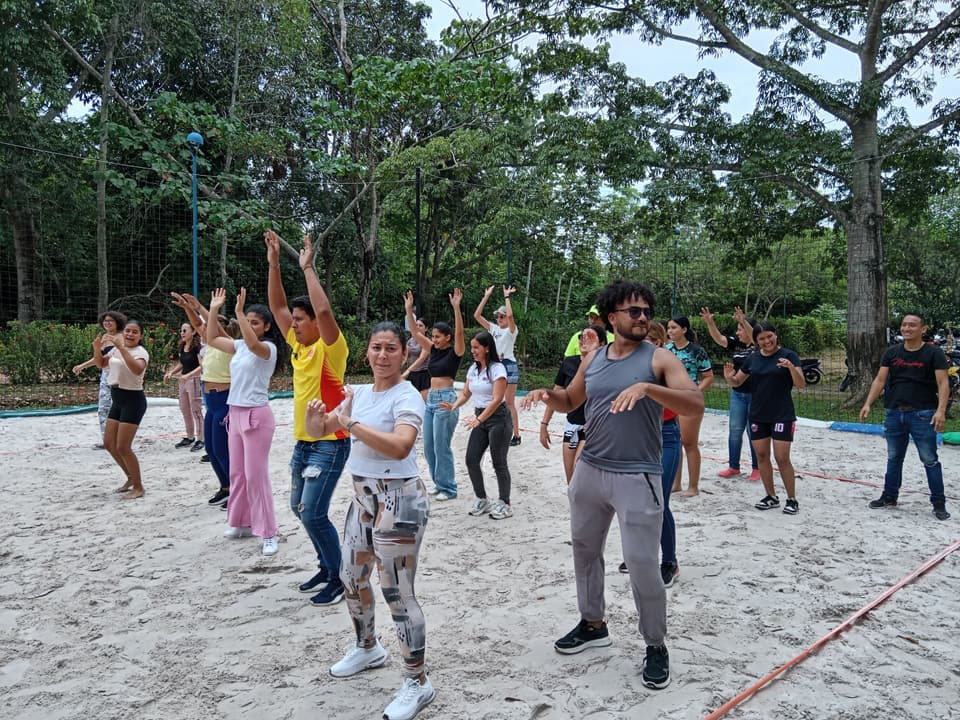
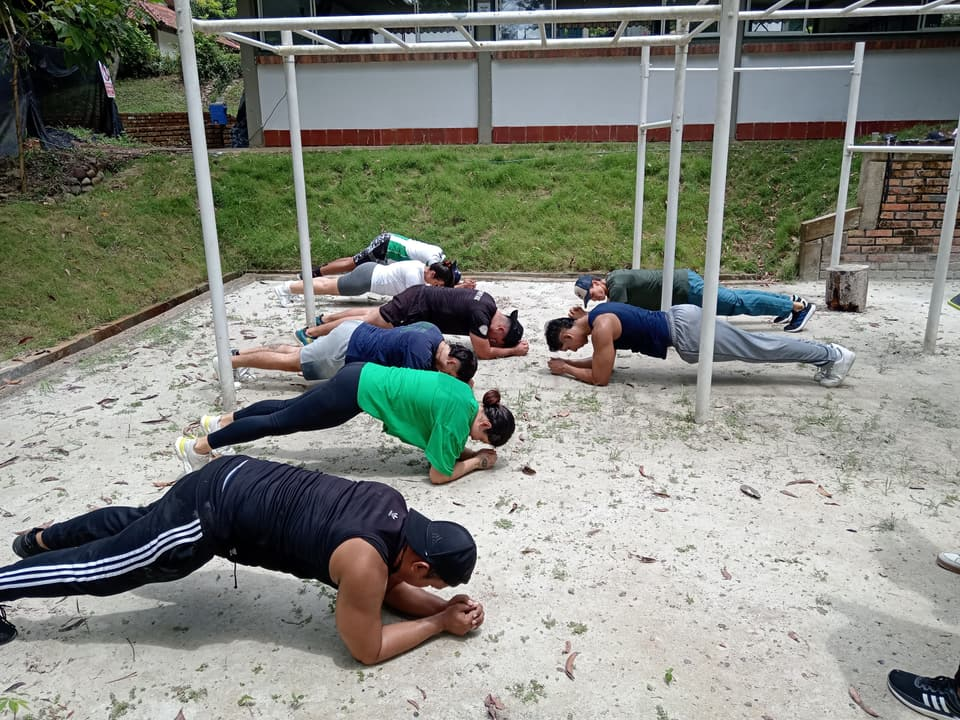
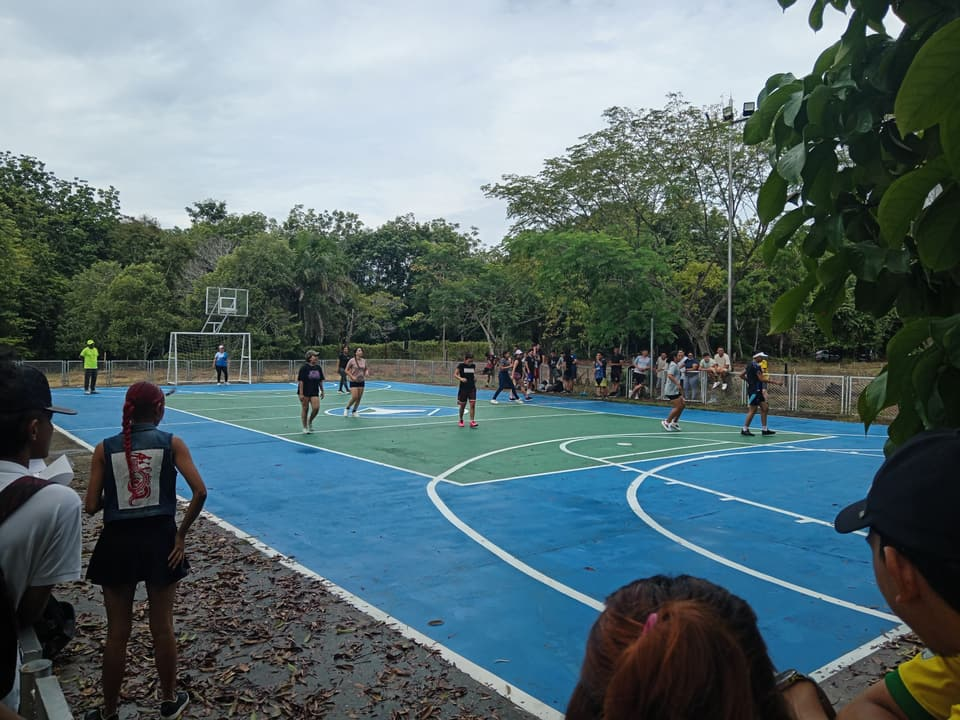
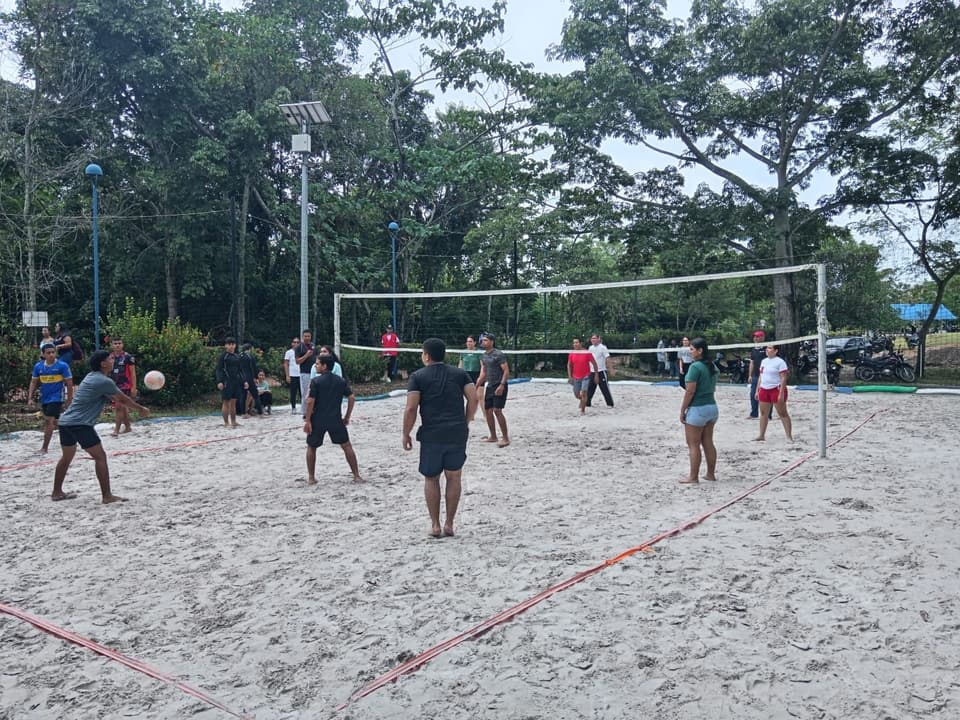
Dónde y cuándo
Sábado7 de noviembrede 2026
a
- Lugar
- Centro de Investigaciones Santa Lucía Km 14 vía Bucaramanga, vereda El Zarzal, Barrancabermeja, Santander, Colombia Cómo llegar en Google Maps
- Organiza
- Escuela de Ingeniería de Producción, Instituto Universitario de la Paz (UNIPAZ)
- Con el apoyo de
- Bienestar Universitario, Escuela de Artes, Escuela de Ciencias de la Salud, Departamento de Seguridad y Salud en el Trabajo, Departamento de Infraestructura y FEDUPAZ